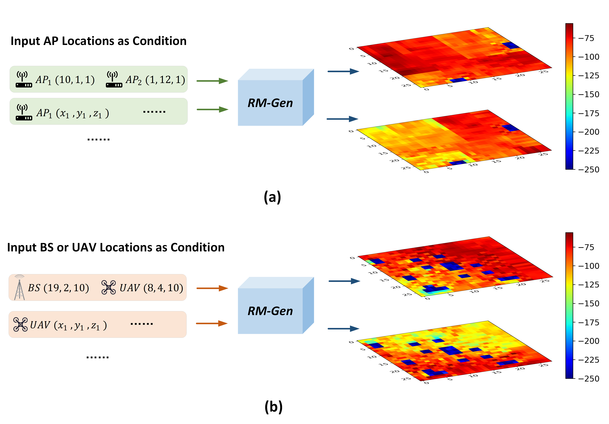
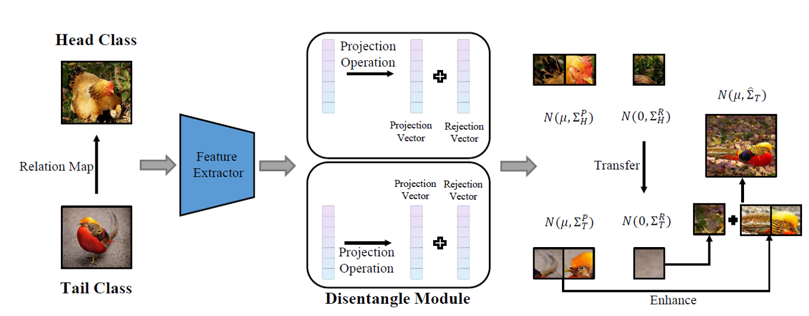
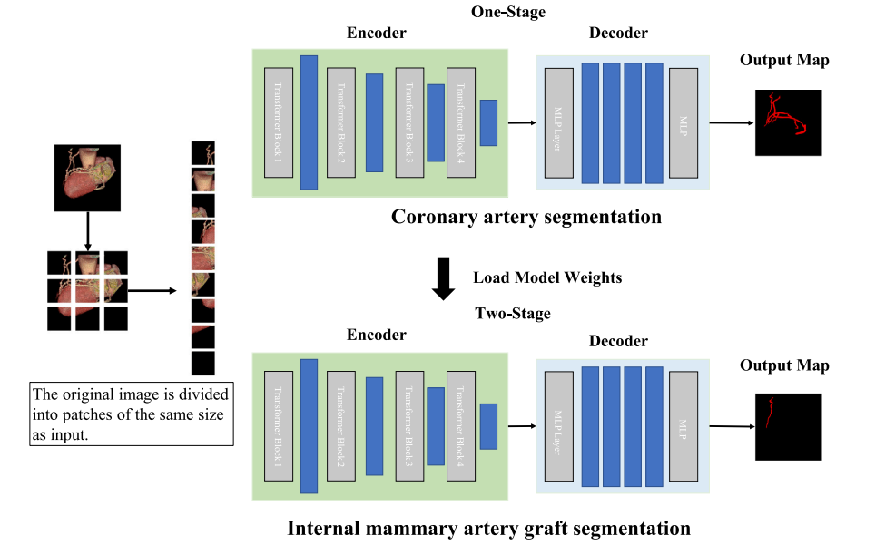

Publications
|

|
Denoising Diffusion Probabilistic Model for Radio Map Estimation in Generative Wireless Networks
Xuanhao Luo, Zhizhen Li, Zhiyuan Peng, Mingzhe Chen, Yuchen Liu International Federation for Information Processing (IFIP) Networking, 2024
This work addresses the challenges in estimating radio maps for wireless networks,
which are crucial for optimizing network performance but traditionally require extensive data collection or computational cost.
We propose RM-Gen, a novel generative framework leveraging conditional denoising diffusion probabilistic models to synthesize radio maps using minimal and readily collected data.
Comprehensive evaluations show that RM-Gen achieves over 95% accuracy in generating radio maps for 60 GHz and sub-6GHz networks, outperforming baseline GANs.
|
|

|
Improving Long-Tailed Classification by Disentangled Variance Transfer
- School of Mathematics Sciences, UCAS, Mar, 2022 - Sep, 2022
- Contribution: Propose a disentangled variance transfer method, DisVar, to improve the
effectiveness
of knowledge transfer in long-tailed learning
- Publication: Under review in Journal of Internet of Things
|
|
Research Interests
I am mainly interested in reliable AI, leading machine learning to reliable tools that can be widely
deployed in the real scenario. To achieve this, I focus on uncertainty, robustness, and adaptability
of
deep learning. My long-term research goal is to develop AI to take responsibility for its decisions,
and
to enable AI to be used in accuracy-sensitive tasks (medical diagnosis, automatic driving, etc.).
- Model Uncertainty: Calibration
- Model Robustness: Out of Distribution Detection, Adversarial Attack
- Model Adaptability: Transfer Learning, Few Shot Learning
|
Research Experience
The Analysis of Luminosity Encoding Rule
- State Key Laboratory of Cognitive Neural Science and Learning, Beijng Normal University,
May, 2018 - May, 2019
- Topic: The Analysis of Luminosity Encoding Rule
- Contribution: Analyze the luminosity encoding rule in V1 cortex with neural network tools
|
Word Segmentation and Named Entity Recognition for Chinese Electronic Medical Record
- School of Mathematics Sciences, Beijing Normal University, Aug, 2019 - Jun, 2020
- Topic: Extract unstructured information from Chinese electronic medical records
- Contribution: Survey and implement traditional methods and deep learning methods on
Chinese
electronic medical records
|
A Survey of Transfer Learning
- School of Mathematics Sciences, UCAS, Sep, 2021 - Nov, 2021
- Topic: A Survey of Transfer Learning
- Contribution:Survey for existing popular transfer learning methods and the application of
transfer
learning in different tasks.
|
|

|
Two-stage Training Strategy Combined with Neural Network for Segmentation of
Internal
Mammary Artery Graft
- School of Mathematics Sciences, UCAS, Dec, 2021 - Mar, 2022
- Contribution: Construct a novel dataset, and propose an effective two-stage training
strategy for
internal mammary artery graft segmentation
- Publication: Biomedical Signal Processing and Control
|
|
|
Improving Long-Tailed Classification by Disentangled Variance Transfer
- School of Mathematics Sciences, UCAS, Mar, 2022 - Sep, 2022
- Contribution: Propose a disentangled variance transfer method, DisVar, to improve the
effectiveness
of knowledge transfer in long-tailed learning
- Publication: Under review in Journal of Internet of Things
|
Serives
- Serve as a reviewer for International Conference on Learning Representations 2023 (ICLR)
- Serve as a reviewer for ACM International Conference on Web Search and Data Mining 2023 (WSDM)
|
Awards
UCAS
- Academic Scholarship of School of Mathematics Science, UCAS, 2022
- Academic Scholarship of School of Mathematics Science, UCAS, 2021
- Academic Scholarship of School of Mathematics Science, UCAS, 2020
BNU
- Second Prize of Scholarship of Beijing Normal University, 2019
- Full scholarship for Tufts University summer school, 2018
- Second Prize of Beijing Normal University Mathematical Modeling Contest, 2018
- Second Prize of Scholarship of Beijing Normal University, 2018
- Second Prize of Scholarship of Beijing Normal University, 2017
- First Prize of New Student Scholarship (top 5%), 2016
- Second Prize of Scholarship of Beijing Normal University, 2016
|
|
|
| |
{kind=link}
{kind=link}
{kind=link}
{kind=link}